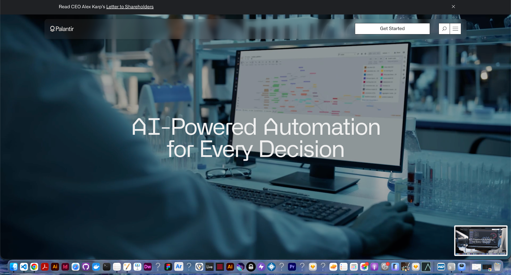

About POSCH
A Canadian hardware company built around disciplined innovation.
POSCH creates modular access hardware designed to respond to real deployment needs, not generic product assumptions.

POSCH creates modular access hardware designed to respond to real deployment needs, not generic product assumptions.
POSCH is a progressive and dynamic company focused on Point of Security Hardware. The company is rooted in a long history of designing practical, configurable, and innovative devices that bridge physical security and digital systems.
Build simple but innovative point-of-security devices that address customer needs directly.
Early hardware foundations expanded into programmable readers that combine multiple identification methods.
Built for secure access, validation, credentialing, and modular deployment paths across industries.
A serious product company should look precise, structured, and capable. This mock site is built with that same posture in mind.
Clear hierarchy, restrained motion, disciplined contrast.
Translucent layers, dark surfaces, refined typography.
Expandable into a larger production site with product modules and downloads.